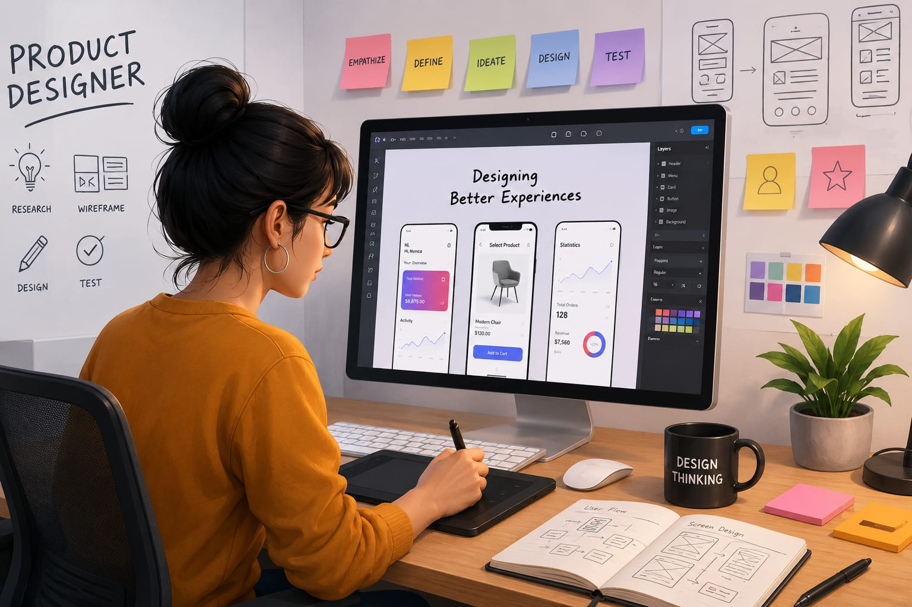

- When you open apps like YouTube, Amazon, or WhatsApp, everything feels easy to use.
- The buttons are placed properly, the colors look attractive, and everything feels simple.
- Someone carefully planned and designed that experience.
- That person is called a Product Designer. 👉 In simple words: Product Designers create digital products that are attractive, user-friendly, and easy to use.
Product Designer
🧑💻 What Do They Do?

🎓 How to Become a Product Designer
The courses to pursue this career are given below :
After completing 10th, you can start learning product design, industrial design, creativity, sketching, and digital tools through diploma or certificate courses.
Diploma in Product Design / Industrial Design
Duration: 3 Years
Eligibility: Class 10 pass
Entrance Exam: Mostly merit-based or institute aptitude test
📝 Exam Details
(Click on the exam name to see full details)
Institutional Aptitude Test Merit-Based AdmissionNote: Students can later move to product design degree courses through lateral entry or higher studies.
After completing 12th, students can join degree courses in product design, industrial design, UI/UX design, and related creative fields.
Bachelor of Design (B.Des) in Product Design
Duration: 4 Years
Eligibility: 10+2 pass in any stream
Entrance Exam: NID-DAT, UCEED, NIFT, SEED, or institute entrance exams
B.Tech in Industrial Design / Design Engineering
Duration: 4 Years
Eligibility: 10+2 with Physics, Chemistry, and Mathematics (PCM)
Entrance Exam: JEE Main or JEE Advanced
Bachelor of Vocation (B.Voc) in Product Design
Duration: 3 Years
Eligibility: 10+2 pass in any stream
Entrance Exam: Merit-based or university-specific entrance test
📝 Exam Details
(Click on the exam name to see full details)
NID-DAT UCEED NIFT UG Institute level Exams JEE Main JEE AdvancedNote: Students from Arts, Commerce, or Science streams can enter product design courses depending on the college and specialization.
After graduation, students can specialize further in product design, industrial design, UX design, manufacturing, and innovation through postgraduate courses.
Master of Design (M.Des) in Product Design
Duration: 2 Years
Eligibility: Bachelor’s degree in Design, Engineering, Architecture, or related fields
Entrance Exam: CEED, NID-DAT (M.Des), or institute entrance exams
M.Tech in Product Design
Duration: 2 Years
Eligibility: B.E./B.Tech in Mechanical, Production, or related engineering fields
Entrance Exam: GATE
PG Diploma in Product Design
Duration: 1 to 2 Years
Eligibility: Graduation in any discipline
Entrance Exam: Portfolio review, interview, or institute-level selection process
📝 Exam Details
(Click on the exam name to see full details)
CEED NID-DAT (M.Des) GATE Institute Level ExamsNote: Postgraduate courses help students specialize in advanced product design, innovation, manufacturing, and user experience design.
This help students learn graphic design, typography, layout design, branding, and commonly used design software.
Product Design Courses
Eligibility: Open to all
Provider: Coursera
Master Product Design
Eligibility: Open to all
Provider: IIM SKILLS
Product Design
Eligibility: Open to all
Provider: Udacity
Note:
(Age limits, marks, and admission process may vary depending on the college or state.
Below are some colleges that offer these courses.
These courses are available in many colleges and universities across India. You can choose colleges based on your location, budget, and entrance exams.)
🏫 Colleges offering these courses in India
STEP 1
Imagine you are working as a Product Designer in a company.
STEP 2
The company wants to create a new mobile app for students.
STEP 3
Your duty is to create a design for that new app.
STEP 4
You draw simple ideas for the app screens and buttons.
STEP 5
You choose colors, shapes, icons, and layouts to make the app easy to use.
STEP 6
Developers build the app using your designs.
STEP 7
If you enjoy creativity and designing useful things, this career may suit you.
Where do 3D Artists work? (Job Roles + Growth)
Product designers work in : Product design studios, Manufacturing companies, Consumer goods companies, Technology companies, Automotive companies, Furniture companies, Industrial design firms, and as Independent designers.
🟢 Beginner Roles
Junior Product Designer
After B.Des / Diploma
Helps create designs for apps, products, or websites.
UX Design Intern
After Certificate / Bootcamp
Tests apps and improves user experience.
CAD Designer
After Diploma / B.Tech
Creates product drawings using design software.
UI Designer
After B.Des / Diploma / Certification
Designs layouts, buttons, icons, and colors for apps or websites.
Product Design Assistant
After Foundation Course / B.Des / B.Tech
Supports senior designers with research, sketches, and materials.
Packaging Designer
After B.Des / Specialized Certification
Designs product boxes and packaging for brands.
🔵 Mid-Level Roles
Product Designer
After B.Des + Experience
Designs complete apps or physical products.
Industrial Designer
After B.Des / M.Des
Designs useful and attractive physical products.
Design Engineer
After B.Tech / M.Tech
Makes sure products work properly and safely.
UX Researcher
After B.Des / M.Des / Psychology + Experience
Studies users and finds problems people face while using apps or products.
Interaction Designer
After B.Des / M.Des + Experience
Designs how apps react to clicks, swipes, and user actions.
Automotive / Furniture Designer
After B.Des / M.Des Specialization
Designs vehicles, furniture, and lifestyle products.
🟣 Advanced Roles
Design Director
After Graduation + Experience
Leads design teams and product ideas.
Principal Product Designer
After M.Des + Experience
Solves complex design problems for companies.
Innovation Lead
After Senior Experience
Creates ideas for future products and technology.
Creative Director
After B.Des / M.Des + Experience
Leads the creative team and decides the overall visual style of products or brands.
Product Strategy Lead
After M.Des / MBA + Leadership Experience
Plans future products by studying business goals and market trends.
Head of UX / Innovation Consultant
After M.Des / PhD + 10+ Years Experience
Leads design innovation and solves complex user experience problems.
Global App and Tech Companies
Design apps, websites, and digital products used by millions of people worldwide.
Automobile and Product Companies
Design car interiors, smart devices, furniture, and lifestyle products.
E-commerce and Startup Companies
Improve shopping apps, delivery systems, and customer experiences.
Gaming and Interactive Media
Design game interfaces, interactive experiences, and virtual products.
Freelance and Remote Work
Many product designers work remotely with international clients and companies.
(Click Yes or No for each question)
1. Do you like drawing or sketching ideas?
2. When you use an app or website, have you ever thought, "I could make this better"?
3. Do you enjoy making projects, models, or creative things for fun?
4. Imagine you are working as a Product Designer for a company. The company wants to create a new water bottle. You think about how people will use it and decide its shape, size, colour, and features. You create a design and work with the team to make a sample. You check the sample and suggest changes. Finally, the company produces the water bottle and people start using the product you designed. Do you like this type of work?
5. A company wants to create a new bicycle helmet that is safer and more comfortable. You study what cyclists need and think about the shape, size, material, and other features. You create a design and work with the team to make a sample. You test the sample and suggest changes to improve it. After the final design is ready, the company starts making the helmet for cyclists to use. Does this type of work interest you?